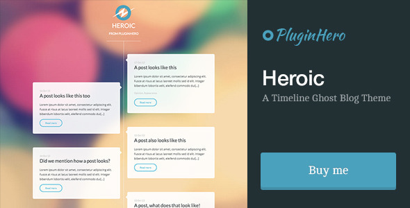
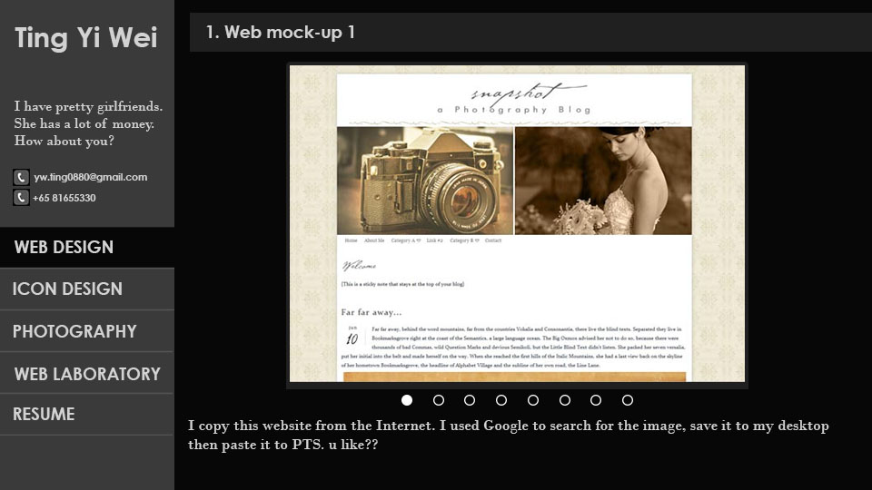

Ting Yi Wei
I have pretty girlfriends. She has a lot of money. How about you?
yw.ting0880@gmail.com
+65 81655330
Web design
Icon design
Photography
Web Laboratory
1. Web Design 1
◄


►
Hahahaha Hahahaha Hahahaha Hahahaha Hahahaha Hahahaha Hahahaha Hahahaha Hahahaha Hahahaha Hahahaha Hahahaha Hahahaha Hahahaha HahahahaHahahahaHahahahaHahahaha
1. Web Design 1
◄
►
Hahahaha Hahahaha Hahahaha Hahahaha Hahahaha Hahahaha Hahahaha Hahahaha Hahahaha Hahahaha Hahahaha Hahahaha Hahahaha Hahahaha HahahahaHahahahaHahahahaHahahaha